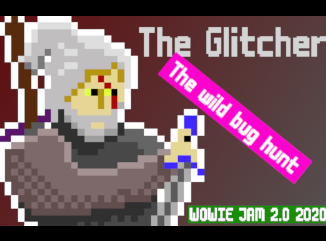
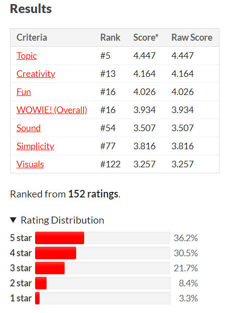

The WOWIE experience
The WOWIE2.0 was a game jam hosted by Jonas Tyroller. The second WOWIE jam took part in January 2020. It started on Friday Jan the 17th 2020 and lastet for 74 hours until Monday morning. EinesteinsErbe a good friend of mine (please check out his blog and I had decided, that this was the right time for us to (for the first time ever) participate in a game jam. Lets see how that worked out for us!
Preperation
If you have to finish a project in a given timeframe, it is always helpfull to do anything you can (and are allowed to do) before, before the project starts. So, we setup a github repository days before the jam, had already a unity base project (complete with a default menu (without the falling buttons), audiomanager and a mainmenu and (empty) an gamescene) setup. Cofeemachine was heated up, Pen and paper ready to use, girlfriends informed and prepared (sorry hunny it might get late this evening...) and we both new exactly which timeframes we could use for the jam. Last but not least, we made sure both teammembers agreed has the same Expetations on the game-reuslt, so nobody gets upset during the project.

Our Goals
The Topic
Watch the WOWIE2.0 anouncment video in which Jonas revealed the topic for the Jam: "intended Bugs". As we heard that we looked at each other and cheered. For one reason. We both like to hide eastereggs and "special" features in programms we design for our coworkers - and most of the time, the love it. Pretty quickly it was clear, this would be great fun! So we started drafting ideas.
Designing the Jam Game
To get as many ideas as possible in a very short amount of time, all three of us (in that phase my girlfriend got included) scribbled for arround 10min with pen and paper.
In the end we agreed on a 2D-puzzle game consiting of multiple levels each of which based on a new bug. With each level complete, the bug from the completed level
would be "fixed" which would lead to another bug.
So far so good. We started coding along...
The Title
The rest of friday was used to draft the first 3 levels and getting some basic stuff done, (mainly menu nad some othe rboring stuff) After the first day of coding, on friday evening, EinsteinsErbe and I sat on the couch playing some mario card before finishing the day. We had a little game
ongoing beside the mario card session. As soon as one of us had a title idea for our game he had to lay a side his controller and note it down, during which the
other one couldtry to get ahead in the game. At one point (EinsteinsErbe was close to getting the finishing line, he looks at me and says: "The Glitcher", "The wild bug hunt!"
cried I, I made it over the finishing line before him, and we had a title for our game.
Needless to say, the next day (saturday) i had to redraw a few sprites for the game and put some effort into the thumbnail for our game. But it went on nicly. Meanwhile EE finished the menu a lot of people liked so much and added the elevel select menu. And that was all for satturday. We had a working menu and 3 very simple levels. So naturally on sunday the good stuff, the funny stuff the magic happend. On that day we completly rewrote the 3 levels we already has, added enemies, 7 more levels some of them which total different mechanics (flappy witcher) and added jumpscares, crashscreens a some glitch shaders. In the evening at 11 pm we had finished our game.
Rating
After a week rating all the other games of the jam, reading and commenting comments we got our result. Placed 16th from 357, and 5th in categorie "Topic"!
Well, we were speachless. We way overshoot all our expectations. It was a full success! We had a lot of fun, our game got played by arround 200 people, we learned
a lot. It was well worth it! (Maybe you hear me still cheering, while I write this blog^^).
As promised by Jonas the Top 20 got a key to his soon to be released game "Will you snail" (Get it here).
